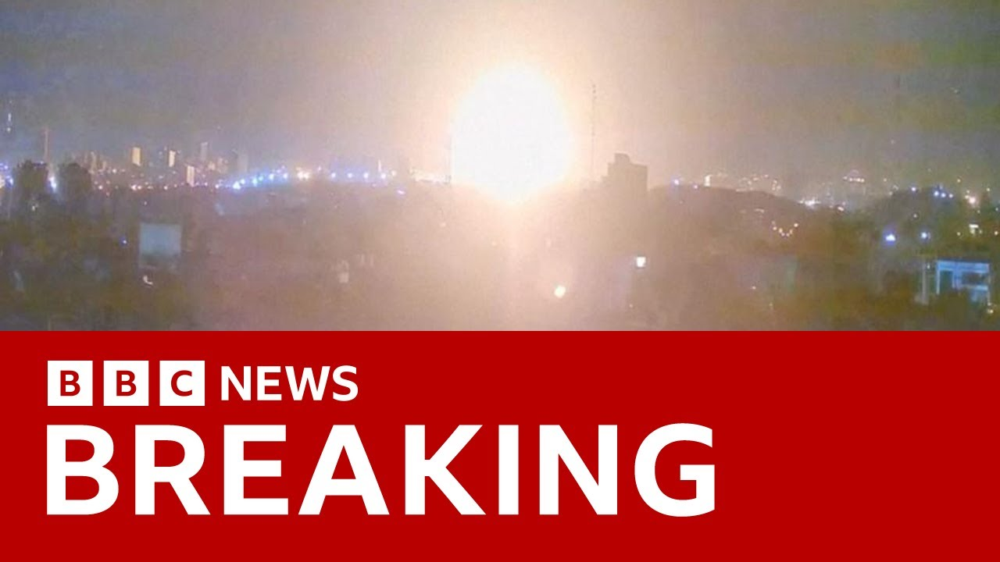

【以色列宣布打击伊朗核设施 爆炸声传遍伊朗 | BBC新闻】
Summary: Breaking news: Israel strikes Iran's nuclear program, prompting emergency measures and fears of retaliation amid high-profile assassinations and international tensions. The White House reiterates no US involvement in Israel's unilateral strikes on Iran, warns Iran against targeting US military facilities in the Middle East, amid escalating tensions and a fractious relationship between Netanyahu and Trump.
摘要： 突发新闻：以色列袭击伊朗核计划，引发紧急措施和对报复的担忧，同时发生高调刺杀事件和国际紧张局势。白宫重申美国未参与以色列对伊朗的单边打击，警告伊朗不要针对中东美军设施，内塔尼亚胡与特朗普关系紧张，局势升级。

⏱️ Estimated Reading Time: 27 min
📚 六级生词 📚 雅思生词 📚 托福生词 📚 专八生词 📚 SAT生词 📚 考研生词 📚 GRE生词 📚 高考生词
We start with breaking news at this hour as Israel has carried out strikes on Iran's nuclear program.
我们首先报道突发新闻，以色列对伊朗的核计划实施了打击。
The IDF has said with blasts heard in Tehran.
以色列国防军表示，德黑兰听到了爆炸声。
The strikes were part of Operation Rising Lion, Israel's Prime Minister Benjamin Netanyahu said, adding Iran was a threat to Israel's very survival.
以色列总理本杰明·内塔尼亚胡称，此次打击是“崛起之狮行动”的一部分，并补充说伊朗对以色列的生存构成威胁。
Israel has declared a state of emergency, saying the country expected retaliation.
以色列宣布进入紧急状态，称该国预计会遭到报复。
Well, joining me live are our Middle East correspondent Hugo Basha in Jerusalem, our senior reporter Bern Debusman at the White House, and our State Department correspondent Tom Baitman.
现在与我连线的是我们在耶路撒冷的中东记者雨果·巴沙、白宫高级记者伯恩·德布斯曼，以及国务院记者汤姆·贝特曼。
Hugo, I'll come to you first.
雨果，我先问你。
Tell us more about what Prime Minister Benjamin Netanyahu has been saying about these strikes.
请告诉我们更多关于内塔尼亚胡总理对这些打击行动的言论。
Yes, Steve.
好的，史蒂夫。
So, it is just after 5:00 in the morning here.
现在这里刚过早上5点。
So uh this campaign by the Israeli military was announced two hours ago by the Israeli defense minister Israel Katz.
以色列国防部长以色列·卡茨在两小时前宣布了这次军事行动。
Uh this has been described as a preemptive precise combined offensive based on uh high-quality intelligence.
这次行动被描述为基于高质量情报的先发制人精确联合进攻。
Dozens of targets uh have been hit across Iran uh striking long range missiles and targets related to the country's nuclear program.
伊朗境内数十个目标遭到打击，包括远程导弹和与核计划相关的设施。
So for a very long time, Israel and the Israeli Prime Minister Benjamin Netanyahu has described Iran's nuclear program as an existential threat and we're seeing now a large-scale attack by the uh by the Israeli military.
长期以来，以色列和内塔尼亚胡总理一直将伊朗的核计划描述为生存威胁，现在我们看到了以色列军方的大规模攻击。
Now there has been a statement by the uh Israeli military's chief of staff saying that the time had come.
以色列军方参谋长发表声明称，时机已到。
We have reached the point of no return.
我们已经到了无法回头的地步。
So it is very interesting that uh you know the way uh you know events unfolded uh this week.
本周事件的发展方式非常有趣。
There was a phone call between the prime minister and President Trump on Monday.
周一，总理与特朗普总统通了电话。
Uh there was a leak of this phone conversation perhaps not by accident saying that the president was against any kind of Israeli military action against uh Iran.
这次通话内容被泄露，可能并非偶然，称总统反对以色列对伊朗采取任何军事行动。
Uh while these negotiations for a deal between American and Iranian officials continued.
与此同时，美伊官员之间的谈判仍在继续。
There was another a round of talks uh expected to take place on Sunday and now these attacks happening.
原定于周日举行的另一轮谈判现在因这些袭击而中断。
Now we're seeing reports as well uh in Israeli media saying that apart from the air strikes targeting those facilities connected to Iran's nuclear program there have been assassinations and the targets include the chief of uh the Iranian military, senior military officials and senior nuclear scientists.
以色列媒体报道称，除了针对伊朗核设施的空中打击外，还发生了刺杀行动，目标包括伊朗军方负责人、高级军官和核科学家。
So, a large-scale attack that has been carried out by uh Israel.
这是一次由以色列发动的大规模攻击。
A state of emergency has been declared here in Israel.
以色列已宣布进入紧急状态。
A a phone alert was sent to everybody in this country about 2 hours ago.
大约两小时前，全国所有人都收到了手机警报。
Uh schools are going to be closed today.
学校今天将关闭。
Uh gatherings have been banned.
集会已被禁止。
The airport uh Ben Gurion airport is also closed.
本古里安机场也已关闭。
So, the country uh you know is expecting a retaliation from uh Iran.
以色列预计会遭到伊朗的报复。
The defense minister said people should expect a missile and drone attack in response to the attacks that we're seeing today.
国防部长表示，人们应预计会遭到导弹和无人机攻击，以回应今天的袭击。
Yeah.
是的。
More we'll ask you about those the preparedness of Israel in just a moment.
稍后我们会问你更多关于以色列的准备情况。
But just to come back on to the the targets and the the focus of Israel's attacks with in Iran's nuclear program.
但回到以色列攻击的目标和重点，即伊朗的核计划。
Was this something that was telegraphed or was was known uh that this was perhaps coming?
这是否早有预兆，或者人们知道这可能发生？
Yeah, we saw that in the last few days there had been a number of reports uh uh suggesting that Israel was making preparations for uh a large-scale attack targeting uh facilities connected to Iran's nuclear program.
是的，过去几天有报道称，以色列正在准备对伊朗核设施发动大规模攻击。
And for quite some time, Israeli officials have been saying that they saw a window of opportunity to attack because last uh last year uh you know uh Iranian Iran's air defense capabilities were degraded after a number of Israeli air strikes.
一段时间以来，以色列官员一直表示，他们看到了攻击的机会窗口，因为去年以色列多次空袭削弱了伊朗的防空能力。
Also, Iranian proxies in the region have been significantly weakened after action by Israel, in particular Hezbollah in Lebanon.
此外，伊朗在该地区的代理人，尤其是黎巴嫩的真主党，在以色列的行动后大幅削弱。
There had been the concern in Israel that any kind of military uh action against Iran's nuclear program could um spark a reaction from Hezbollah in Lebanon.
以色列曾担心，对伊朗核计划的任何军事行动都可能引发黎巴嫩真主党的反应。
You know the militia that is supported by uh Iran heavily armed.
这支民兵组织得到伊朗的大力武装支持。
We know that you know Hezbollah has been significantly degraded after more than a year of conflict with Israel.
我们知道，真主党在与以色列一年多的冲突后实力大减。
So uh the you know Israeli authorities saw that an opportunity here and what was seen today uh you know is that Israeli officials are saying that uh you know there was the opportunity here to strike that Iran was advancing with its nuclear program.
因此，以色列当局看到了机会，今天的行动表明，以色列官员认为有机会打击伊朗推进核计划的行动。
Again for a very long time the prime minister you know Benjamin Netanyahu had been saying that he saw the you know Iranian nuclear program as an existential threat.
长期以来，内塔尼亚胡总理一直将伊朗核计划视为生存威胁。
The Iranians had been saying also for a very long time that you know their nuclear program is for peaceful purposes but now we're seeing this large-scale uh Israeli attack targeting dozens of locations across uh Iran military facilities uh military assets connected to Iran's nuclear program.
伊朗长期以来声称其核计划用于和平目的，但现在我们看到以色列的大规模攻击，目标是伊朗境内数十个与核计划相关的军事设施和资产。
Uh Hugo, you mentioned that the defense Israel's defense minister confirmed the strikes and declared that state of emergency.
雨果，你提到以色列国防部长确认了打击行动并宣布进入紧急状态。
Also saying that counterattacks were were expected in the immediate future.
他还表示，预计会立即遭到反击。
What kind of preparedness is Israel uh doing to to ensure that its people will be safe?
以色列采取了哪些准备措施以确保人民安全？
Yeah, it is very interesting also that the Israeli authorities are suggesting that this is just uh the beginning of what could be uh you know a large scale offensive over many days.
以色列当局暗示，这可能只是持续多天的大规模进攻的开始。
Uh the you know Israeli authorities were describing it as the first stage of this military offensive against uh Iran.
以色列当局将其描述为针对伊朗的军事进攻的第一阶段。
Now this is obviously a country with very strict security measures.
以色列显然是一个安全措施非常严格的国家。
uh Israel uh you know uh there have been you know security measures in place for quite some time especially after uh October the 7th the Hamas attacks uh in southern Israel.
尤其是10月7日哈马斯袭击以色列南部后，安全措施已实施多时。
So this is a country where the population uh is you know uh prepared for the possibility of attacks.
因此，以色列人民已为可能的袭击做好准备。
A number of of measures uh you know have been announced especially this morning again uh there has been a ban on gatherings.
今早宣布了一系列措施，包括禁止集会。
Schools uh are going to be closed today.
学校今天将关闭。
Hospitals have also announced a number of measures across the country.
全国医院也宣布了多项措施。
The airspace has been closed in Israel.
以色列领空已关闭。
The main uh international airport has also been closed.
主要国际机场也已关闭。
So a number of measures have been introduced now by the Israeli authorities as part of this state of emergency that has been declared uh after uh these attacks, Israeli attacks targeting a number of facilities across Iran.
以色列当局已采取多项措施，作为袭击伊朗境内多个设施后宣布的紧急状态的一部分。
Hugo, just to come back to that recent line of news update that you gave us, Iranian state media, they've been reporting that the Iran Revolutionary Guards Chief Hussein Salami has been killed in an Israeli strike.
雨果，回到你刚才提到的新闻更新，伊朗官方媒体报道称，伊朗革命卫队负责人侯赛因·萨拉米在以色列袭击中丧生。
he's among several senior leaders who have died.
他是多名遇害的高级领导人之一。
Uh tell us a bit more about the significance of Israel with with regards to who they're targeting.
请告诉我们更多关于以色列选择这些目标的意义。
Yeah.
好的。
So, it is very interesting that what we're seeing that, you know, dozens of targets, military targets have been hit across the country, but also a number of high-profile assassinations uh also already uh you know, have been confirmed by the uh in Iran by state media in the country.
我们看到，伊朗境内数十个军事目标遭到打击，同时多名高调人物被刺杀，伊朗官方媒体已确认。
So it seems again that you know these are the indications of a really well planned uh large-scale attack uh Israeli attack targeting um Iran you know nuclear scientists and top military commanders and we saw again that the you know the authorities in Israel said that you know those dozens of locations hit included uh you know facilities with long range missiles and targets uh and targets linked to uh the country's nuclear program.
这似乎表明，以色列精心策划了大规模攻击，目标是伊朗的核科学家和高级军事指挥官。以色列当局称，被打击的数十个地点包括远程导弹设施和与核计划相关的目标。
So um again for quite some time uh the you know Israel had been warning you know the international community about the threats uh posed by uh Iran's nuclear program, Iran's nuclear ambitions.
一段时间以来，以色列一直警告国际社会伊朗核计划和核野心构成的威胁。
A military official uh in Israel speaking right after the confirmation of these uh attacks came from the defense minister said that Iran had enough nuclear material to create 15 nuclear bombs within days and that Iran was advancing uh secret attempts to assemble those weapons and that could happen within uh in uh in in a very short period of time.
以色列一名军事官员在国防部长确认袭击后表示，伊朗拥有足够在几天内制造15枚核弹的材料，并正在秘密尝试组装这些武器，可能在短期内完成。
So uh again the Israeli authority saying that Iran had been advancing uh this nuclear program dismissing you know the Iranian position that uh its nuclear program was for peaceful purposes and again remember there was a deal that had been struck you know with Iran by the international community during the Obama administration.
以色列当局再次表示，伊朗一直在推进核计划，驳斥其和平目的的立场。国际社会曾在奥巴马政府时期与伊朗达成协议。
President Trump in his first term uh pulled out from the deal ever since he came back to office earlier this year.
特朗普总统在第一任期退出该协议，今年早些时候重返办公室后继续反对。
uh he you know led these efforts uh to try to negotiate a new deal with uh Iran.
他领导了与伊朗谈判新协议的努力。
What we've seen in recent weeks was that uh you know a number of American officials were saying that Iran wasn't making concessions in these negotiations uh and that some of Iran's demands uh in those talks were considered to be unacceptable by the Americans and that was the position uh in Israel as well.
最近几周，多名美国官员表示，伊朗在谈判中未作出让步，其部分要求被美国视为不可接受，以色列也持相同立场。
the authorities were saying that they would go ahead with uh you know a military uh attack with some kind of military action against Iran if they considered the terms of any kind of deal to be unacceptable for uh Israel.
以色列当局表示，如果他们认为任何协议条款对以色列不可接受，将采取军事行动打击伊朗。
So during you know in the past few days we saw a number of measures uh that were announced in particular by the Trump administration including the evacuation of the embassy uh in Iraq because there is the fear that any kind of retaliation from uh Iran could also involve American assets becoming targets across the Middle East.
过去几天，特朗普政府宣布了多项措施，包括撤离驻伊拉克使馆人员，担心伊朗的报复可能使美国在中东的资产成为目标。
So we saw that you know in the last few days there had been indications that uh an Israeli attack could be imminent and this is exactly what happened today.
因此，过去几天有迹象表明以色列可能即将发动攻击，今天果然发生了。
Yeah, we'll be getting reaction from Washington in just a moment.
我们将很快获得华盛顿的反应。
Thanks very much for that.
非常感谢。
Hugo Basha there in Jerusalem.
耶路撒冷的雨果·巴沙。
Just to add on to that Iranian state media report saying that the Iran revolutionary guards chief Hussein Salami has been killed.
补充一点，伊朗官方媒体报道称，伊朗革命卫队负责人侯赛因·萨拉米已被击毙。
They also added that Feredun Abbasi, the former head of the atomic energy organization has also been killed.
他们还称，原子能组织前负责人费雷敦·阿巴西也被击毙。
That's according to Iranian state media.
这是伊朗官方媒体的报道。
Well, let's cross over now to Bern Dusman who's at the at the White House for more on the US reaction to this.
现在连线白宫的伯恩·杜斯曼，了解美国的反应。
Burnt, it's uh late in the evening where you are.
伯恩，你那边已经很晚了。
Has the White House said anything?
白宫发表声明了吗？
Well, there's been a a brief statement from the State Department and from National Security Adviser Marco Rubio kind of distancing some themselves from from the attack.
国务院和国家安全顾问马可·卢比奥发表了简短声明，试图与此次袭击保持距离。
Uh but other than that, there had been no real indication of this coming, at least from the White House perspective.
除此之外，白宫方面并未提前透露任何迹象。
At about 11:00 a.m. this morning, there was another another event here at the White House in which Trump was explicitly asked if he thought an Israeli strike on Iran was imminent.
今早11点左右，白宫举行活动时，特朗普被直接问及是否认为以色列即将袭击伊朗。
He said he didn't think it was imminent.
他表示不认为袭击迫在眉睫。
And he explicitly said that he did not want them to do this and potentially scupper any negotiations.
他明确表示不希望以色列这样做，以免破坏谈判。
Of course, there was indirect and direct negotiations expected to take place on Sunday.
原定于周日举行的直接和间接谈判可能受到影响。
uh he was very explicit that he did not want anything to get in the way of those negotiations, although he did say he thought things were fairly close to a strike, but certainly not in the time frame that we saw this evening.
他明确表示不希望任何事情干扰谈判，尽管他认为局势接近袭击，但肯定不是今晚的时间框架。
And how are we expecting Donald Trump to react to this?
我们预计特朗普会如何反应？
As you mentioned, he's said he's not didn't want to see Israel attack uh Iran and uh but we're not expecting to hear him speak this evening.
如你所言，他不希望以色列袭击伊朗，但今晚预计他不会发表讲话。
We won't be hearing from him on camera at least this evening, although one suspects he might post on Truth Social at some point during the night.
至少今晚他不会在镜头前讲话，但可能夜间会在Truth Social上发帖。
Um, but on one hand, you know, he's been very steadfast in that he wants America to be a close ally of Israel and he supports Israel's right to defend itself as he says.
一方面，他坚定支持美国作为以色列的亲密盟友，并支持以色列的自卫权。
Uh on the other hand, there had been reports over the growing months and it became increasingly clear that there was a rift between Trump and the Netanyahu government into how to approach the issue of Iran's nuclear program.
另一方面，过去几个月有报道称，特朗普与内塔尼亚胡政府在伊朗核问题上的分歧日益明显。
Uh there was reports a few months ago that he had waved off a previous plan for an Israeli strike in Iran.
几个月前有报道称，他曾否决以色列袭击伊朗的计划。
And he and the administration were very explicit in that they wanted to give negotiations more of a chance, which Netanyahu clearly didn't see as the case.
他和政府明确表示希望给谈判更多机会，而内塔尼亚胡显然不这么认为。
Um but there've been growing distance between the two sides and it it's just unclear at the moment how he will react if the administration feels it wasn't given notice uh too much ahead of time.
双方分歧越来越大，目前尚不清楚如果政府认为未提前获知
Although we did see of course the the warnings to US families and US military installations in the Middle East previously this week.
尽管我们确实看到了本周早些时候对美国公民和中东美军设施的警告。
Bern, we understand that the White House is is saying that Trump is expected to attend a National Security Council meeting at 11:00 a.m. Eastern time uh tomorrow morning.
伯恩，我们了解到白宫表示特朗普预计将于明天上午东部时间11点参加国家安全委员会会议。
Uh what kind of posture do you think the US is going to take on this given that they don't want to say that they're involved and presumably they have no interest in being drawn into another Middle East conflict?
鉴于美国不愿承认参与且显然无意卷入另一场中东冲突，你认为美国将采取何种立场？
Well, I think the messaging we'll hear from President Trump and other members of the cabinet tomorrow are again reiterating that there was no US involvement in this air strike in these series of air strikes which were carried out by Israel unilaterally.
我认为明天我们将听到特朗普总统及内阁成员再次强调美国未参与以色列单方面发起的这一系列空袭。
And I think we'll hear very strong language from the US warning Iran off of any strike on US military facilities, for example, in Iraq or in the UAE, Kuwait or Qatar or Bahrain, where there's obviously earlier this week already been quite some concern about that those facilities could be caught in the crossfire of a conflict between Iran and Israel.
我们还将听到美国用强硬措辞警告伊朗不要袭击美军设施，例如在伊拉克、阿联酋、科威特、卡塔尔或巴林的设施，本周早些时候已有人担忧这些设施可能卷入伊朗与以色列的冲突。
I think we'll hear very strong language from the administration tomorrow warning Iran that it does not want to get involved in this conflict, but that if US military facilities in the Middle East are targeted, the US will respond.
我认为政府明天将严厉警告伊朗美国不愿卷入冲突，但若中东美军设施遭袭，美国将作出回应。
Yeah, thanks very much for that. Bernman at the White House.
好的，非常感谢白宫的伯恩曼。
Let's cross over to our State Department correspondent Tom Baitman uh for more.
接下来请听国务院记者汤姆·贝特曼的报道。
Tom, there were some indications or clues perhaps that something was going to happen given that the State Department had been retrie recalling a staff in the Middle East.
汤姆，鉴于国务院此前召回中东工作人员，已有一些迹象表明可能发生事件。
Yeah, I mean it was Wednesday that there was a partial evacuation notice, a voluntary uh evacuation uh for some non-essential staff at the US embassy in Baghdad, also at the mission in Eril in northern Iraq and then for non-essential staff and family members of military personnel in Bahrain and Kuwait, you know, particularly significant military presence of the fifth fleet, the US fifth fleet based in um Bahrain.
是的，周三美国驻巴格达使馆及伊拉克北部埃尔比勒领事馆的非必要人员收到自愿撤离通知，巴林和科威特的非必要军事人员家属也收到通知，尤其是驻巴林的美国第五舰队。
Although I have to say it was unclear the degree to which whether this was kind of signaling to the Iranians um in a way to try and put pressure on the nuclear talks which remember was supposed to take place uh for a sixth round of talks between the US and the Iranians in Oman on uh Sunday.
不过尚不清楚这是否意在向伊朗传递信号，向原定周日举行的美伊第六轮核谈判施压。
Um uh and then we had this morning I mean I was in the state department on Thursday morning it became clear that something was up.
周四早晨我在国务院时，明显感觉有事发生。
basically uh the daily press briefing was uh pulled off the schedule.
日常新闻发布会突然取消。
I mean that has never happened really during the Trump administration at least and I think all the signals were that something may be imminent from the Israelis and this felt like the Americans trying to position themselves to get ready for that.
这在特朗普任内从未发生，所有信号都指向以色列可能即将行动，美方正为此做准备。
But I think what is incredibly significant is the statement that we have had from the Secretary of State Marco Rubio who has basically said Israel is on its own in this offensive action.
但最重要的是国务卿马可·卢比奥的声明，他表示以色列此次进攻行动是独自行动。
the US is not involved.
美国未参与。
Uh they've said it's unilateral action uh by the Israelis against Iran.
他们称这是以色列对伊朗的单边行动。
The US we we are not involved in the strikes and they say our top priority is um protecting American forces and basically going on to warn the Iranians against thinking about targeting uh any US forces or bases in the region.
美国未参与空袭，首要任务是保护美军，并警告伊朗不要袭击该地区美军或基地。
What's really important about this statement is it doesn't mention the defense of Israel in terms of it being any sort of joint action by the US at all.
声明关键之处在于完全未提及美国与以色列共同防御。
That is extremely unusual.
这极不寻常。
Um, and I think what we're now in sort of uncharted territory because President Trump had told Benjamin Netanyahu didn't want him to do this.
我们正进入未知领域，因特朗普曾告诉内塔尼亚胡不要这样做。
It's now clear from the Israelis they were basically planning from Monday to do this.
以方显然从周一就开始策划。
Now, um, there was a phone call between Prime Minister Netanyahu and President Trump on Monday was described as extremely tense.
周一内塔尼亚胡与特朗普的通话据称极其紧张。
It was clear that President Trump had tried to uh stop uh the Israelis from attacking the Iranians and give the diplomatic path more time and that hasn't happened.
特朗普试图阻止以色列攻击伊朗，为外交争取时间，但未成功。
So it feels like um Prime Minister Netanyahu has gone it alone potentially against the direct wishes of the president of the United States.
内塔尼亚胡似乎违背特朗普意愿独自行动。
That that is extremely significant.
这极为重要。
And now remember last year when there was a buildup and an escalation, direct escalation and firing between the Israelis and the Iranians on at least two occasions.
去年以伊至少两次直接交火并升级。
Um the Americans basically organized a defensive coalition to help Israel defend itself against the missile strikes from the Iranians.
当时美国组织防御联盟协助以色列抵御伊朗导弹袭击。
There doesn't feel like any kind of that sense of organization this time around.
这次却毫无此类组织迹象。
you know, Israelis were woken up by aid sirens and they've said this was to wake people up, not because of incoming Iranian missiles, but that I think is almost inevitable now, an Iranian counterattack.
以色列人曾被警报声惊醒，官方称仅为警示而非伊朗导弹来袭，但伊朗反击现在几乎不可避免。
And so, you're going to have to see the US probably try and scramble to help the Israelis uh without that sort of sense of organization last time.
美国可能仓促援以，但不会像上次那样有组织。
But beyond that, even that isn't abundantly clear.
即便如此，这点也不明确。
And remember, there's been an extremely fractious relationship between Mr. Netanyahu um and President Trump.
内塔尼亚胡与特朗普关系极度紧张。
Mr. Netanyahu has in the past made a point of um trying to show to Washington that he is prepared to act unilaterally what in what he in the way that he thinks is in Israel's self-interest.
内塔尼亚胡曾刻意向华盛顿展示其准备单边行动维护以色列利益。
Remember he tried to derail the first nuclear deal under President Obama by basically going behind President Obama's back making direct appeals to Republicans in Washington.
他曾绕过奥巴马直接游说共和党人破坏伊核协议。
Um the White House was enraged by his behavior that time around.
白宫当时对其行为震怒。
So you've got a very fractious relationship between these two men at an absolutely critical moment now with the chance of a far far greater escalation in the Middle East now very possible and potentially likely and we're seeing very widescale attacks at least six locations across Iran.
此刻二人关系极度紧张，中东局势极可能大幅升级，伊朗至少六处地点遭大规模袭击。
Uh a nuclear enrichment facility so says Benjamin Netanyahu at Natans has been attacked.
内塔尼亚胡称纳坦兹核设施遇袭。
um civilian casualties.
出现平民伤亡。
Iranian state media talking about civilians including women and children they say killed in one strike in Iran.
伊朗官媒称包括妇女儿童在内的平民在袭击中丧生。
It's clear that assassinations are involved of um you know nuclear officials.
显然有核官员遭暗杀。
So this is a big attack, very widespread amid a sort of fractious relationship between Israel and its absolutely key ally, the United States, when it comes to um its defensive posture in the Middle system.
这是以色列与关键盟友美国关系紧张之际发起的大规模广泛袭击，事关其中东防御态势。